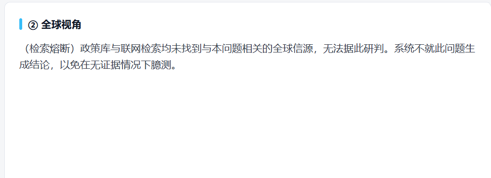

policy-observer · 可信的跨国政策研判系统
面向政策敏感行业(医药 / 能源 / 跨境贸易)· 把「可信」做进检索与研判,并用评测证明
双引擎跨国政策研判系统——
国产 / 海外双模型交叉研判,生产级 RAG 检索,
每一步都为一件事服务:让 AI 的判断可被信任、且有数字撑腰。
数字来自 17 条人工校订黄金集上的分层评测(见下方「评测」)。
给政策敏感行业一个「可信」的研判
医药、能源、跨境贸易这些行业高度依赖政策动向,一条新政可能直接决定一个业务方向能不能继续做。但单一信息源、单一模型容易产生偏差,客户真正要的不是更多信息,是更可靠的对比与综合。
系统用双引擎并行研判 + 综合层裁定给出结论;而我最在意、也是整个系统的主线——让它知道自己什么时候不该被信任,并把这件事做进检索与评测里。
从知识库到研判的分层系统
底层是一个持续维护的政策知识库,上面是生产级 RAG 检索,再上面是双引擎研判 + 综合裁定,并有用户长期记忆做个性化。
双引擎并行 → 综合层交叉裁定 → 重大决策点启用 NGT。旁挂用户长期记忆(个性化,带护栏)。三节点可独立调用,也可组合订阅。
让研判只建立在真正相关的信源上
研判可不可信,第一关在检索。系统用混合检索(向量补语义、BM25 补文号/专名精确匹配)+ cross-encoder 重排召回信源,再过一道多语言语义闸门:分数不够的一律判为不相关。一条相关的都没有时,直接熔断——诚实说「无法据此研判」,拒绝在无证据下臆测。


混合检索 + 重排不是堆技术,每一层都用消融验证过贡献(对照:纯词面检索):
| 检索配置 | R@1 | Recall@5 | 精确匹配 | 跨语言 | MRR |
|---|---|---|---|---|---|
| 纯词面(对照) | 12% | 47% | 50% | 50% | 0.25 |
| 纯向量 | 65% | 100% | 80% | 100% | 0.78 |
| 混合(+BM25) | 63% | 100% | 100% | 100% | 0.74 |
| 混合 + 重排 | 77% | 100% | 100% | 100% | 0.86 |
读法:BM25 专补文号/专名的精确匹配(纯向量 80% → 100%);重排把对的排到最前(R@1 63%→77%)。每个组件都挣到了它的位置。
熔断阈值不是拍脑袋——用「正例该通过 vs 离题该熔断」标定,取两者干净分离处;标定后离题查询熔断、答得出的不误杀。
分层评测,不靠「感觉它挺好」
我没有止步于「能产出报告」,而是搭了一套分层评测体系,用可衡量的指标逐层拷问它:
- 检索层gold 政策的命中率(recall@k)与排名(MRR)——上面那张消融表,量化"找对了吗"。
- 生成层忠实度 0.93:研判的每条结论能否被检索到的信源支持(不编造)——这就是「接地度」的量化。
- 引用层引用准确 0.83:每个结论标注的信源,是否真的支持该结论。
- 裁判 + 校准指标用 LLM-as-judge 打分,rubric 明确;裁判本身要拿人工标注校准(收尾项)。
黄金集经过人工校订(剔除非政策稿、修正映射),数字才可信。评测是架构支柱,不是最后一道工序。
每日增量融合,而不是越堆越旧
系统每日定时抓取政策源,把新政增量融合进知识库——是融合,不是堆叠:
- 去重聚合按 fingerprint(标题归一化 + 日期)去重,多源同一政策自动合并信源。
- 增量索引真正的新政才切块 + embedding 追加进向量库,不全量重建。
- 图上融合抽新政的引用/文号加进政策关系图;反查:新政若废止/修订旧政策,加"废止"边并把旧政策标为失效。
- 失效降权被废止的政策在检索/研判时降权并标注「已被 X 废止」——知识库保持"现行有效"。
"融合 = 用关系整合新旧",而不是简单追加。这样知识库是被维护的,不是被堆积的。
懂用户 · 与向量够不到的关系
系统从用户的研判历史里学出画像(关注领域、关心的分析角度),个性化检索与研判措辞。但个性化有两条硬护栏:领域偏好必须过相关性闸门才注入(问医保不会被硬塞半导体,防误导幻觉)、检索软加权封顶(高重要度政策仍靠前,防信息茧房)。个性化不为画像伪造相关性——接地度原则延伸到了个性化。
政策之间是有边的(废止 / 修订 / 引用 / 依据),向量只能找"相似的",答不了"这条依据/引用了哪条"。系统建了一张政策关系图,关系型问题走图遍历、模糊问题走 RAG——两边各取所长。问「XX 被谁废止了吗」时,图里没有废止边就诚实说「未见废止」,不编造关系。
哪些路没走,为什么
自动改写 query 去重试,看起来能提召回。但我实测发现它会把离题查询改写成「像政策」的样子而 spurious 命中(离题误救率约 30%)——这恰恰违背系统的接地度原则。所以模糊查询走前置校验、请用户澄清,而不是让系统自己猜。
大部分日常政策追踪不需要 6 阶段深度协商,只有「重大决策点」(要不要进入某市场)才需要。做成插件后,响应速度和算力成本都显著优化,同时保留「必要时启用深度研判」的能力。
实测中,同一份政策,国产模型和海外模型的解读会在关键判断上分叉——分叉本身就是信号。双引擎不是冗余,是结构化的「压力测试」。
分层技术栈
- 编排LangGraph 状态机 · 双引擎 + 综合 + NGT 插件 · uv workspace 五包解耦 · config 驱动的多 LLM role-router
- 检索 RAG结构感知切块 · 混合检索(BM25 + 向量 + RRF)· cross-encoder 重排 · 多语言语义闸门 / 熔断
- 评测分层评测(检索 / 生成 / 引用)· 消融实验 · 阈值标定 · RAGAS 式指标 · LLM-as-judge
- 记忆 · 图用户长期记忆(ETL + 护栏)· 政策关系图 + 多跳 · 查询路由 · 每日增量融合
- 工程Python 3.12 · FastAPI · SQLAlchemy 2.0(async)· PostgreSQL / SQLite · Alembic · Docker · 115 测试
诚实边界:知识库当前语料规模有限、评测裁判仍待人工校准——但系统有每日增量融合机制持续扩充与保鲜,评测体系也让每一步改动都可被量化验证。比起「看起来能用」,我更在意它「什么时候不该被信任」——这才是决策类 AI 真正的护城河。